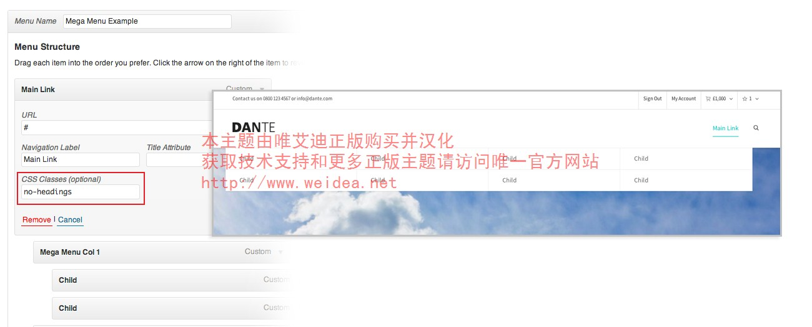
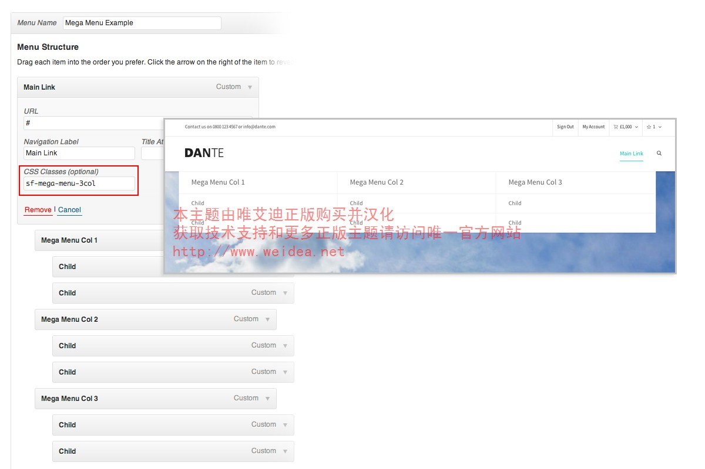
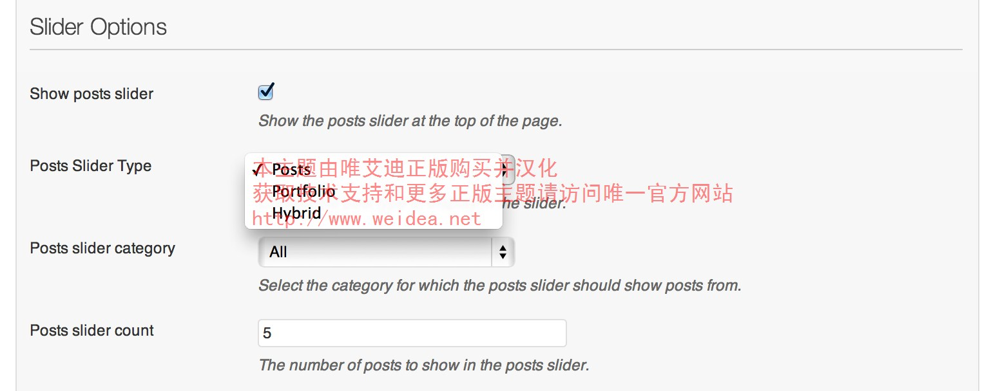

<!DOCTYPE html>
<html lang="en">
	<head>
		<meta charset="utf-8">
		
		<title>Dante Documentation</title>
		
		<link rel="shortcut icon" href="assets/favicon.ico" />
		
		<!-- CORE CSS -->
		<link href="css/styles.css" rel="stylesheet">
	
	</head>
		
		<body>
		
		<div id="docs-info">
			<h1>Dante WordPress Theme Documentation</h1>
			<h4>Designed &amp; Developed by Swift Ideas &copy; 2013</h4>
			<div class="links">
				<a href="http://support.swiftideas.net" target="_blank">Get Support</a><a href="http://dante.swiftideas.net/developer-documentation" target="_blank">Developer Documentation</a><a href="http://support.swiftideas.net/knowledgebase" target="_blank">Knowledgebase</a><a href="https://vimeo.com/album/2606969" target="_blank">Video Tutorials</a><a href="http://dante.swiftideas.net/changelog">View Changelog</a><a href="http://dante.swiftideas.net" target="_blank">View Theme Demo</a>
			</div>
		</div>
		
		<div id="docs-contents">
			
			<!-- NAV -->
			<ul id="tab-nav">
				<li><a href="#introduction">Introduction</a></li>
				<li class="divider"><span></span></li>
				<li><span>Installation</span></li>
				<li><a href="#wordpress-installation">WordPress Installation</a></li>
				<li><a href="#theme-installation">Theme Installation</a></li>
				<li><a href="#setting-up">Setting Up</a></li>
				<li><a href="#demo-content-import">Demo Content Import</a></li>
				<li class="divider"><span></span></li>
				<li><span>Next Steps</span></a>
				<li><a href="#logo">Logo</a></li>
				<li><a href="#menus">Menus</a></li>
				<li><a href="#posts">Posts</a></li>
				<li><a href="#portfolio">Portfolio</a></li>
				<li><a href="#products">Products</a></li>
				<li><a href="#super-search">Super Search</a></li>
				<li><a href="#team">Team</a></li>
				<li><a href="#clients">Clients</a></li>
				<li><a href="#testimonials">Testimonials</a></li>
				<li><a href="#jobs">Jobs</a></li>
				<li><a href="#faqs">FAQs</a></li>
				<li><a href="#widget-areas">Widget Areas</a></li>
				<li><a href="#twitter-oauth">Twitter oAuth</a></li>
				<li><a href="#child-theme">Child Theme</a></li>
				<li class="divider"><span></span></li>
				<li><span>Theme Features</span></li>
				<li><a href="#swift-page-builder">Swift Page Builder</a></li>
				<li><a href="#color-customizer">Color Customizer</a></li>
				<li><a href="#theme-options">Theme Options</a></li>
				<li><a href="#font-options">Font Options</a></li>
				<li><a href="#meta-options">Meta Options</a></li>
				<li><a href="#posts-slider">Swift Slider</a></li>
				<li><a href="#revolution-slider">Revolution Slider</a></li>
				<li><a href="#custom-widgets">Custom Widgets</a></li>
				<li><a href="#shortcode-generator">Shortcode Generator</a></li>
				<li><a href="#translation">Translation</a></li>
				<li><a href="#woocommerce">WooCommerce</a></li>
				<li><a href="#custom-login-logo">Custom Login Logo</a></li>
				<li class="divider"><span></span></li>
				<li><span>Shortcodes</span></li>
				<li><a href="#buttons">Buttons</a></li>
				<li><a href="#chart">Chart</a></li>
				<li><a href="#columns">Columns</a></li>
				<li><a href="#counters">Counters</a></li>
				<li><a href="#countdown">Countdown</a></li>
				<li><a href="#icons">Icons</a></li>
				<li><a href="#icon-box">Icon Box</a></li>
				<li><a href="#image-banner">Image Banner</a></li>
				<li><a href="#labelled-pricing-table">Labelled Pricing Table</a></li>
				<li><a href="#lists">Lists</a></li>
				<li><a href="#modal">Modal</a></li>
				<li><a href="#pricing-table">Pricing Table</a></li>
				<li><a href="#progress-bar">Progress Bar</a></li>
				<li><a href="#fullscreen-video">Fullscreen Video</a></li>
				<li><a href="#responsive-visibility">Responsive Visiblity</a></li>
				<li><a href="#social">Social</a></li>
				<li><a href="#social-share">Social Share</a></li>
				<li><a href="#table">Table</a></li>
				<li><a href="#tooltip">Tooltip</a></li>
				<li><a href="#typography">Typography</a></li>
				<li class="divider"><span></span></li>
				<li><span>Included Files</span></li>
				<li><a href="#css-files">CSS Files</a></li>
				<li><a href="#javascript-files">JavaScript Files</a></li>
			</ul>
			
			<!-- CONTENT -->
			<div id="introduction">
				<h2>Introduction</h2>
				<p>Thank you for buying Dante! We have spent a very long time developing this theme and the framework which it is built upon. We've done our very best to make it as extensive and feature-rich as possible, while also keeping it incredibly easy and slick to use. We've also worked hard to improve the ease of customisation, and have provided a <a href="http://dante.swiftideas.net/developer-documentation" target="_blank">Developer Documentation</a> reference for anyone who wishes to extend/modify the theme through a Child Theme.</p>
				<h3>Documentation Improvements</h3>
				<p>We would happily welcome feedback from you on how, if anywhere, you would like this documentation improved. If you would find anything a little bit easier and more helpful if we went into more detail, or explained something a little better - we'd be happy to hear it. We want Dante to be the best theme on the market! If you have any comments, please mail us via the form on <a href="http://www.themeforest.net/user/SwiftIdeas">http://www.themeforest.net/user/SwiftIdeas</a>.</p>
				<h3>Video Tutorials</h3>
				<p>To help you better understand the theme, and for walkthroughs of certain aspects of Dante, please check out our tutorial videos:</p>
				<a href="https://vimeo.com/album/2606969" target="_blank" class="sf-button accent">Video Tutorials</a>
			</div>
			
			<div id="wordpress-installation">
				<h2>WordPress Installation</h2>
				<p>This theme requires a working version of WordPress to already be installed on your server. If you need to install WordPress then please visit: <a href="http://wordpress.org/download/" target="_blank">http://wordpress.org/download/</a>. If you need any help with the installation, please refer to the guide below:</p>
				<a class="sf-button" href="http://codex.wordpress.org/Installing_WordPress" target="_blank">Installing WordPress</a>
				<h3>Step By Step</h3>
				<p>Here is a brief step by step on how to install WordPress:</p>
				<ol>
					<li>Download and unzip the WordPress package if you haven't already.</li>
					<li>Create a database for WordPress on your web server, as well as a MySQL user who has all privileges for accessing and modifying it.</li>
					<li>Upload the WordPress files in the desired location on your web server:
						<ul>
							<li>If you want to integrate WordPress into the root of your domain (e.g. http://example.com/), move or upload all contents of the unzipped WordPress directory (but excluding the directory itself) into the root directory of your web server.
							<li>If you want to have your WordPress installation in its own subdirectory on your web site (e.g. http://example.com/blog/), create the blog directory on your server and upload WordPress to the directory via FTP.</li>
						</ul>
						Note: If your FTP client has an option to convert file names to lower case, make sure it's disabled.</li>
					<li>Run the WordPress installation script by accessing wp-admin/install.php in a web browser.
						<ul>
							<li>If you installed WordPress in the root directory, you should visit: http://example.com/wp-admin/install.php</li>
							<li>If you installed WordPress in its own subdirectory called blog, for example, you should visit: http://example.com/blog/wp-admin/install.php</li>
						</ul>
					</li>
			</div>
			
			<div id="theme-installation">
				<h2>Theme Installation</h2>
				<h3>1) Uploading Dante</h3>
				<p>The theme files need to be uploaded before you can activate the theme for use. There are two ways you can do this, <strong>FTP upload</strong> or <strong>WordPress upload</strong>.</p>
				<ul>
				    <li>If you are uploading via <strong>FTP upload</strong>, then you need to upload the unzipped folder “dante” to the /wp-content/themes folder of your WordPress installation.</li>
				    <li>If you are uploading via <strong>WordPress upload</strong>, then navigate within the WordPress admin area to <span>Appearance > Add New Themes > Upload</span>. Select the zipped file “<strong>dante.zip</strong>” and then hit Install Now.</li>
				</ul>
				<p>If you get an error saying that the stylesheet is missing, then you have uploaded the wrong folder. Please check that you are uploading the dante/dante.zip within the Theme Files folder. You may have to unzip the file that you download from ThemeForest to find this.</p>
				<br/>
				<h3>2) Activating Dante</h3>
				<p>Once you have uploaded the theme, you need to activate it by going to <span>Appearance > Themes</span>, and activate “Dante”.</p>
			</div>
	        
	        <div id="setting-up">
	        	<h2>Setting Up</h2>
	        	<h3>1) Install Plugins</h3>
	        	<p>Now that you have activated Dante, you will see a yellow notice at the top of the screen. This notice is to let you know about the plugins that we recommend you install for use with the theme. Click 'Begin installing plugins' and install/activate the plugins one by one. You can also access this page by going to Appearance > Install Plugins.</p>
	        	<br/>
	        	<h3>2) WooCommerce Image Settings</h3>
	        	<p>You will need to set the WooCommerce image settings in order for the quality to be as high as expected. You can set these settings by going to <span>WooCommerce > Settings</span>. You'll then want to click the "Catalog" tab, and scroll down until you see "Image Options".</p>
	        	
	        	<p>Above are the image settings which we use for our demo. We recommend you follow the same width, but you can choose your desired width/height ratio.</p>
	        	<p class="note"><strong>NOTE:</strong> If you're installing the theme on existing content, then you may need to use the <a href="http://wordpress.org/plugins/regenerate-thumbnails/" target="_blank">Regenerate Thumbnails</a> plugin to regenerate the images to use your newly set image sizes.</p>
	        	<br/>
	        </div>
	        
	        <div id="demo-content-import">
	        	<h2>Demo Content Import (Optional)</h2>
	        	<p class="note"><strong>NOTE:</strong> Before importing the demo content, make sure you have installed &amp; activated "Contact Form 7" from within Appearance > Install Plugins, and also WooCommerce if you want the demo shop content.</p>
	        	<p>Both the theme content and theme options have been provided so that you can set up the theme to look exactly like the demo in a few minutes.</p>
	        	<h3>Full Demo Import</h3>
	        	<p>We've provided the FULL demo content import file, that will allow you to replicate the demo site that we show. This file is titled "dante_demo-content.xml" and can be found within the "Demo Content" folder.</p>
	        	<br/>
	        	<h3>Alt Demo Import</h3>
	        	<p>If the Full demo import fails for you, it will likely be due to your server memory settings, which will be limiting the import. In this case, we have provided an XML file without the media included, which will should import fine 100%. You can find this file within the "/Demo Content" folder, named "dante_demo-content-alt.xml".</p>
	        	<h3>Theme Options Import</h3>
	        	<p>The theme options text file is to copy and paste the contents into the box provided within Theme Options, under the Import/Export sub-menu. You can find this file, named "dante_theme-options.txt" within the "Demo Content" folder.</p>
	        	<h3>Increase WordPress/PHP Memory Limit</h3>
	        	<p>If you have any issues with the import, i.e. any errors, then you'll likely need to increase the memory limit and try again. Here's a guide of how to proceed if you come across issues:</p>
	        	<ol>
	        	    <li>Edit wp-config.php and enter the following at the bottom of the file:
	        	        <code class="small">define('WP_MEMORY_LIMIT', '64M');</code>
	        	    </li>
	        	    <li>If you have access to your server's PHP.ini file, then find the following line and increase the value, for example:
	        	        <code class="small">memory_limit = 64M</code>
	        	    </li>
	        	    <li>If you don't have access to your server's PHP.ini file, then try adding this to the bottom of the .htaccess file at the root of your WordPress site:
	        	        <code class="small">php_value memory_limit 64M</code>
	        	    </li>
	        	    <li>If you aren't confident enough to attempt the above yourself, or nothing has worked, then please contact your host directly - they will be able to help.</li>
	        	</ol>
	        	<p>You can use the below image as reference for the setup we have on our server:</p>
	        	
	        </div>
	        
			<div id="logo">
				<h2>Logo</h2>
				<p>You can change the theme’s logo by accessing the Theme Options and uploading your logo with the uploader under the “Header Options” section.</p>
				
				<br/><br/>
				<p>You'll want to upload an image to use for the retina logo too, to make your logo high quality on retina displays. The retina logo should be double the size in pixels, of your standard logo. If you do provide a retina logo, then please provide the logo width in the field below. This allows the theme to set the size, and enable the retina functionality to work perfectly.</p>
				<p>The max height for the logo area is 42px. If you upload an image with a bigger height than this, it will automatically be scaled to fit. The logo area has a maximum size, as to keep the menu items correctly placed. If you upload an image with a smaller height than this, you may need to add top spacing to get it vertically centered.</p>		
			</div>
	
			<div id="menus">
				<h2>Menus</h2>
				<p>Dante features 4 menu areas; the main navigation in the header, the mobile menu, the menu in the top header, and the optional menu in the footer copyright bar.</p>
				<h3>Creating Menus</h3>
				<p>By selecting the <span>Appearance > Menus</span> option from the left WordPress admin sidebar, you can create menus under the <span>Edit Menus</span> tab:</p>
				
				<h3>Using Menus In Theme Locations</h3>
				<p>Once you've created your menu, you need to assign it to the menu location which you would like to use it for. You can do so by setting it under the <span>Manage Locations</span> tab.</p>
				
				<p>You can also set the top header menu, and footer menu here, so if you would like to use both make sure you create a menu for each area.</p>
				<h3>Mega Menu</h3>
				<p>Mega Menu functionality is built-in to Dante, so you can easily create mega dropdowns without any extra plugins or configuration. All you need to do is create a menu that goes into 3 tiers. You can have as many items with a mega menu as you like. Menu items that only have one level of children will show a standard dropdown. The image below shows an example of the setup for a mega menu, and the front end output:</p>
				
				<h3>Customising The Mega Menu Display</h3>
				<p>To enable customisations for the mega menu dropdown, you'll need to first make sure you have enabled the ability to add custom css classes to your menu items. You can enable this functionality by pressing the <span>Screen Options</span> tab in the top right hand corner of your screen, and then checking the "CSS Classes" checkbox:</p>
				
				<p>Enabling CSS Classes will add an extra box to each menu item that you have in your menu, in the same place you'd set the title, url etc. Note that this is only visible once you've added the item to the menu.</p>
				<p>By adding the following to the parent menu item for the mega menu, you can hide the column heading for each mega menu column. This is ideal if you want to create a grid of menu items. Here is the code you would add, and an example of what it does:</p>				
				<code class="small">no-headings</code>
				
				<p>You can also configure the mega menu to be 2, 3, 4, or 5 columns, by adding one of the following:</p>
				<code class="small">sf-mega-menu-2col
sf-mega-menu-3col
sf-mega-menu-4col
sf-mega-menu-5col</code>
				
				<p>In version 1.1, we added the ability for alternative styling within the mega menu. You can achieve this by adding the following css class to the parent menu item:</p>
				<code class="small">sf-mega-menu-alt</code>
			</div>
			
			<div id="posts">
				<h2>Posts / Blog</h2>
				<p>The <span>Posts</span> menu option on the left is where you add blog posts. To add a new blog post, select the <span>Posts > Add New</span> option from the left hand WordPress menu.</p>
				<h3>Creating A Post</h3>
				<p>Once you're on the <span>Add New Post</span> screen, you will then be able to set a title for the blog post, add the body content, and also provide all the meta information such as extra details and media. In the blog meta you can set the image for the thumbnail, and also the media type for the detail page.</p>
				<p>You can use the Swift Page Builder to create the content of the item, which effectively allows you to have limitless possibilities for what you can display, and also how you can display it. If you do use the Page Builder to create the content, you will want to provide a custom excerpt (can be found in the item meta).</p>
				<p>The item meta also contains post slider options, allowing you to set the image for the slide that will show if the item appears in a posts slider, and also the display for the caption.</p>
				
				<h3>Creating A Blog Page</h3>
				<p>To display your blog posts, you will then need to create a page that includes the "Blog", "Recent Posts" or "Posts Carousel" page builder asset:</p>
								
				<p>The blog asset includes options such as the following, allowing you to customise the output to your liking:</p>
				
				<p class="note"><strong>NOTE:</strong> DO NOT set the posts page in Settings > Reading, as this will force your page to show the archive layout, and not follow your created page.</p>
			</div>
	
			<div id="portfolio">
				<h2>Portfolio</h2>
				<p>The <span>Portfolio</span> menu option on the left is where you add Portfolio items. To add a new portfolio item, select the <span>Portfolio > Add New</span> option from the left hand WordPress menu.</p>
				<h3>Creating A Portfolio Item</h3>
				<p>Once you're on the <span>Add New Portfolio Item</span> screen, you will then be able to set a title for the portfolio item, add the body content, and also provide all the meta information such as extra details and media. In the portfolio meta you can set the image for the thumbnail, and also the media type for the detail page.</p>
				
				<p>You can add categories for each portfolio item's which act as the filters in the filtering system, and also a way to create multiple portfolio pages. You can have subcategories for filtering on a category Portfolio page, so none of the functionality is lost. When setting up categories, it is important that you name the slugs correctly. The slug of each category should be the same as the name, but all lowercase. If the category name contains spaces, then these should be represented in the slug with a '-'.</p>
				<p>You can use the Swift Page Builder to create the content of the item, which effectively allows you to have limitless possibilities for what you can display, and also how you can display it. If you do use the Page Builder to create the content, you will want to provide a custom excerpt (can be found in the item meta).</p>
				<h3>Creating A Portfolio Page</h3>
				<p>To display your portfolio items, you will then need to create a page that includes the "Portfolio" page builder asset. The portfolio asset has the following options included, allowing you to customise the output to your liking:</p>
				
			</div>
			
			<div id="products">
				<h2>Products</h2>
				<p>The <span>Products</span> menu option on the left is where you can add and manage products. To add a new product, select the <span>Products > Add Product</span> option from the left hand WordPress menu.</p>
				<h3>Adding A Product</h3>
				<p>Once you're on the <span>Add New Product</span> screen, you will then be able to set a title for the product item, add the description, and also provide all the data information such as price, stock status, attributes, etc.</p>
				<p>You can add a featured image in the right column box, and above that set any other gallery images. Any images you add here will be used for the product slider images.</p>
				<h3>Creating a Variable Product</h3>
				<p>If you would like to create a product where you can select the size/colour of a product for example, then please check out the following guide:</p>
				<a class="sf-button" href="http://docs.woothemes.com/document/product-variations/" target="_blank">Product Variations</a>
				<h3>Creating / Setting A Shop Page</h3>
				<p>To display your products, you will want to create a page, leave the content blank, and then set the "Shop Base Page" in <span>WooCommerce > Settings > Pages</span>.</p>
				
				<p>If you would like to add products within a page that you create using the page builder, you can also use the Products &amp; Products (Mini) assets.</p>
			</div>
			
			<div id="super-search">
				<h2>Super Search</h2>
				<p>The <span>Super Search</span> is a unique feature to Swift Ideas themes, allowing you to provide a helpful tool to your customers in guiding them to what they are looking for.</p>
				<p>In order to setup the search options/text to match your setup, you need to go to <span>Theme Options > Super Search Options</span>.</p>
				
				<p>You can set up to 6 filters, each one with text before the option select, the type of option to show, and the default text for the option.</p>
				<p>There are also options to set the final text (after the last filter), and the button text.</p>
			</div>		
			
			<div id="team">
				<h2>Team</h2>
				<p>The <span>Team</span> menu option on the left is where you add team members. To add a new team member, select the <span>Team > Add New</span> option from the left hand WordPress menu.</p>
				<h3>Adding A Team Member</h3>
				<p>You will then be able to provide all the details for the team member through the team member meta box.</p>
				<h3>Displaying The Team Members</h3>
				<p>To show your team members, you will need to create a page that includes either the "Team" or "Team Carousel" page builder assets.</p>
			</div>
			
			<div id="clients">
				<h2>Clients</h2>
				<p>The <span>Clients</span> menu option on the left is where you add clients. To add a new client, select the <span>Clients > Add New</span> option from the left hand WordPress menu.</p>
				<h3>Adding A Client</h3>
				<p>You will then be able to provide an image for the client, and a link if you'd like through the client meta box.</p>
				<h3>Displaying The Clients</h3>
				<p>To display your clients, you will then need to create a page that includes either the "Clients" or "Clients (Featured)" page builder assets.</p>
			</div>
			
			<div id="testimonials">
				<h2>Testimonials</h2>
				<p>The <span>Testimonials</span> menu option on the left is where you add testimonials. To add a new testimonial, select the <span>Testimonials > Add New</span> option from the left hand WordPress menu.</p>
				<h3>Adding A Testimonial</h3>
				<p>You will then be able to provide the testimonial in the post content, and then the testimonial cite in the testimonial meta box.</p>
				<h3>Displaying The Testimonials</h3>
				<p>To display your testimonials, you will then need to create a page that includes either the "Testimonails", "Testimonials Carousel", or "Testimonials Slider" page builder assets.</p>
			</div>
			
			<div id="jobs">
				<h2>Jobs</h2>
				<p>The <span>Jobs</span> menu option on the left is where you add job listings. To add a new job listing, select the <span>Jobs > Add New</span> option from the left hand WordPress menu.</p>
				<h3>Adding A Job</h3>
				<p>You will then be able to enter the content for the job in the post content editor.</p>
				<h3>Displaying The Jobs</h3>
				<p>To display your job listings, you will then need to create a page that includes either the "Jobs" or "Jobs Overview" page builder asset.</p>
			</div>
			
			<div id="faqs">
				<h2>FAQs</h2>
				<p>The <span>FAQS</span> menu option on the left is where you add faqs. To add a new faq, select the <span>FAQs > Add New</span> option from the left hand WordPress menu.</p>
				<h3>Adding An FAQ</h3>
				<p>You will then be able to enter the question (the title of the faq), and the answer in the the post content editor. You will also need to add a topic for each faq.</p>
				<h3>Displaying The FAQs</h3>
				<p>To display your faqs, you will then need to create a page that includes the "FAQs" page builder asset.</p>
			</div>
	
			<div id="widget-areas">
				<h2>Widget Areas</h2>
				<p>There are up to 13 widget areas that can be viewed under the Appearance > Widgets menu, eight sidebar areas, and four footer column widget areas. You can select which sidebars appear on the page through the page/post editor. The number of footer sidebars depends on the footer setup that you choose within Theme Options.</p>
				
				<h3>Setting Sidebars on Posts/Pages</h3>
				<p>When you create or edit a post/page/product, you have the option to override the default sidebar configuration. You can find these options in the meta options, which are visible below the content editor.</p>
								
			</div>
			
			<div id="twitter-oauth">
				<h2>Twitter oAuth</h2>
				<p>To enable the use of Twitter widgets/assets within Dante, you will need to follow a few steps:</p>
				<ol>
				<li>Go to <span>Plugins > Add New</span>, and search for "oAuth Twitter Feed for Developers". Install and activate this plugin.</li>
				<li>Follow step 1 from the guide here to create your Twitter APP, and get the required keys/tokens – <a href="http://www.webdevdoor.com/php/authenticating-twitter-feed-timeline-oauth/" target="_blank">http://www.webdevdoor.com/php/authenticating-twitter-feed-timeline-oauth/</a></li>
				<li>Enter these keys/tokens in the <span>Settings > Twitter Feed Auth</span> panel within WordPress.</li>
								
				</ol>
			</div>
			
			<div id="child-theme">
				<h2>Child Theme</h2>
				<p>We have provided a child theme package ready for you to use if you wish to make changes to files, while keeping them through updates. The child theme is included within the main download folder, and is named "dante-child" all you need to do is upload this as well as the standard "dante" folder, and then activate the child theme in Appearance > Themes from the WordPress menu.</p>
				<h3>style.css</h3>
				<p>We've include the child theme css file ready for you to add your own styles, if you'd prefer to do it here rather than in the custom css box within the theme options. If you are adding styles here, but aren't seeing them on the front end, try adding !important to the end of the declaration. This is sometimes needed to override the dynamic css styles that are generated from the theme options customisations.</p>
				<h3>functions.php</h3>
				<p>We've also included a child theme functions.php file, which you can use to add your own php functions, or override functions from the parent theme. If you'd like to do this, make sure you check out the developers documentation for the theme.</p>
			</div>

			<div id="swift-page-builder">
				<h2>Swift Page Builder</h2>
				
				<h3>Overview</h3>
				<p>The Swift Page Builder (SPB) allows you to create unique and amazing pages, exactly the way you want them! The SPB is powered by shortcodes, which are embedded when you select the content elements you want, and edit them. You can see the source by going back to the classic editor, although you shouldn't ever need to do this and you should only make changes to this if you know what you're doing.</p>
				
				<br/><br/>
				<h3>Editing Elements</h2>
				<p>To add a content element to the page, all you need to do is drag the element from the dropdown into the content area, or simply click on it to have it added automatically. You can then edit the column width (on applicable elements) by pressing the left/right arrows in the top left of the content element, and also edit the asset (the pencil), duplicate the element, or delete the element.</p>
				
				
				<br/><br/><br/>
				<p>When you click on the edit button, you will be given the option of specifying a number of parameters based on the content element. Below is a screenshot from the edit screen of the Portfolio content element. As you can see there are a wide number of options for you to choose from.</p>
				
				<h3>Video Demo</h3>
				<p>Please watch the video below to get an idea of how to use the Page Builder:</p>
				<iframe src="http://player.vimeo.com/video/69413492" width="770" height="460" frameborder="0" webkitAllowFullScreen mozallowfullscreen allowFullScreen style="display: inline-block;"></iframe>
				<h3>Advanced Tips</h3>
				<p>The SPB includes a Blank Spacer element, which allows you to add spacing in between your content elements, to suit your needs. We decided on making this user controlled, so that there is never a case where you don't have the spacing you need.</p>
				
				<br/><br/>
				<p>We have added a field in most page builder assets called "extra class". This can be used to style a particular asset differently, or you can use our handy custom classes to remove default styling such as margins or paddings. Below is a list of our custom classes.</p>
				
				<p class="note"><strong>NOTE:</strong> Make sure you only enter "pb0" for example, you do not need to include the period in front of the class.</p>
			</div>
						
			<div id="color-customizer">
				<h2>Color Customizer</h2>
				<p>The color customizer can be accessed by pressing the "Color Customizer" button within the WordPress admin bar, or through the Appearance > Themes menu. From the color customizer you can preview the themes color/skin changes as you make them.</p>
				
			</div>
			
			<div id="theme-options">
				<h2>Theme Options</h2>
				<p>The theme options can be used to customise the theme to suit your needs, including backgrounds, layouts and much more. You should take the time to go through all of these options to ensure that you are getting the most out of the theme.</p>
				
			</div>
			
			<div id="font-options">
				<h2>Font Options</h2>
				<p>Dante allows you to use either Web Standard, Font Deck, or Google Fonts - separately for both Body &amp; Headings text. If you are using Web Standard, or Google Fonts, then all you need to do is select the type from the button set, and then select the font family from the provided dropdowns.</p>
				
				<h3>FontDeck Options</h3>
				<p>If you are using Font Deck, then please follow the instructions that are provided in the description underneath the option title. You can also find the instructions here:</p>
				<h4>STEP ONE</h4>
				<p>Go to <a href="https://fontdeck.com/account" target="_blank">https://fontdeck.com/account</a>, and add a website if you haven't already. If you have, then click on this website. You will then proceed to a page where you can see your font choices. In another browser tab, open up Theme Options > Font Options within your WordPress dashboard.</p>
				<h4>STEP TWO</h4>
				<p>At the bottom of the Theme Options > Font Options panel, you will find an option with a text area, with the option being named "FontDeck JS Code". In this text area paste the code that you can find from Step 1 of the FontDeck install options.</p>
				
				<br/><br/><br/>
				<h4>STEP THREE</h4>
				<p>In the Body/Heading sections of Theme Options > Font Options panel, you will find an option with a text area, with the option being named "Standard FontDeck Font" or "Heading FontDeck Font". In this text area paste the code that you can find from Step 2 of the FontDeck install options.</p>
				
				<h3>Uploading @font-face Fonts</h3>
				<p>If you would like to add your own @font-face fonts, then here are a few tips to do so. We'd recommend that you use the Font Squirrel web font generator, found here - <a href="http://www.fontsquirrel.com/tools/webfont-generator" target="_blank">http://www.fontsquirrel.com/tools/webfont-generator</a>.</p>
				<p>You'll need to upload your font files to your server via FTP, or you could upload them one by one to the WordPress Media Manager. Once you've uploaded them, you will need to reference them using the following css. You can add this to the custom css box within theme options, or within the child theme css if you are using a child theme. When you download the kit from Font Squirrel, you will find a file named "stylesheet.css" within the zipped folder. This file contains the full @font-face declaration for your uploaded font. We've placed a reference for you below:</p>
				<code>@font-face {
    font-family: 'FONT_NAME';
    src: url('FONT_URL.eot');
    src: url('FONT_URL.eot?#iefix') format('embedded-opentype'),
         url('FONT_URL.woff') format('woff'),
         url('FONT_URL.ttf') format('truetype'),
         url('FONT_URL.svg#FONT_NAME') format('svg');
    font-weight: normal;
    font-style: normal;
}

// BODY FONT
body, h6 {
	font-family: "FONT_NAME", Arial, Helvetica, Tahoma, sans-serif;
}

// HEADINGS FONT
h1, h2, h3, h4, h5, .custom-caption p, span.dropcap1, span.dropcap2, span.dropcap3, span.dropcap4, .spb_call_text, .impact-text, .impact-text-large, .testimonial-text, .header-advert, .sf-count-asset .count-number, #base-promo, .sf-countdown, .sf-icon-character, .fancy-heading h1 {
	font-family: "FONT_NAME", Arial, Helvetica, Tahoma, sans-serif;
}</code>
			<h3>Subset/Cyrillic Google Fonts</h3>
			<p>If you would like to use Subset or Cyrillic Google Fonts, then you will need to include these manually. The code below is an example of what you would add to the custom css box within theme options, or the child theme css file:</p>
			<code>// IMPORT THE FONT
@import url(http://fonts.googleapis.com/css?family=PT+Serif&amp;subset=latin,cyrillic);

// BODY FONT
body, h6 {
	font-family: "PT Serif", serif;
}

// HEADINGS FONT
h1, h2, h3, h4, h5, .custom-caption p, span.dropcap1, span.dropcap2, span.dropcap3, span.dropcap4, .spb_call_text, .impact-text, .impact-text-large, .testimonial-text, .header-advert, .sf-count-asset .count-number, #base-promo, .sf-countdown, .sf-icon-character, .fancy-heading h1 {
	font-family: "PT Serif", serif;
}</code>	
			</div>
			
			<div id="meta-options">
				<h2>Meta Options</h2>
				<p>Dante uses meta options to allow you to upload images, provide information, and set up the way the page/post displays. You can find these below the content editor on Pages/Posts/Portfolio Items. Please spend some time exploring these, as knowing what they control will be very helpful in ensuring you are efficient with your content input. Below you can see where to find the meta options within any post type:</p>
				
			</div>
			
			<div id="posts-slider">
				<h2>Swift Slider</h2>
				<p>On every page you create, you can optionally include the Swift Slider at the top of the page, with options for the number of posts to show, and what category to show posts from. You can select whether the slider pulls in posts, portfolio items, or both - the "Hybrid" option.</p>
				
				<p>The Swift Slider does not require any special content to be created for it, as it is powered by posts and/or portfolio items. The Slider will use the featured image from the post/portfolio item, unless you have provided one in the meta options for that item. You can set the caption position per item, as seen below:</p>
				
			</div>
					
			<div id="revolution-slider">
				<h2>Revolution Slider</h2>
				<p>The theme includes the premium plugin - Revolution Slider. You can find documentation for this included within the Documentation > Revolution Slider Documentation folder.</p>
				<p>Once you've installed and activated the Revolution Slider plugin (by going to Appearance > Install Plugins), you will then see the menu item appear at the bottom of the WordPress menu, as below:</p>
				
				<h3>Import Demo Revolution Slider</h3>
				<p>If you want to import our revolution slider example, you will need to run through the following steps:</p>
				<ol>
					<li>Install the Revolution Slider plugin (Appearance > Install Plugins)</li>
					<li>Open up the plugin from the left menu at the bottom.</li>
					<li>Press the "Import Slider" button on the right.</li>
					<li>Choose the zip file from the "Demo Content" folder of the main Dante zip download. It is named "homeslider.zip".</li>
					<li>Once you've imported the slider, you are free to change the settings and add/edit slides.</li>
				</ol>
			</div>
	
			<div id="custom-widgets">
				<h2>Custom Widgets</h2>
				<p>Dante includes 9 custom widgets, that you can use in the sidebars or footer area.</p>
				
				<p><span>Swift Framework Advert Grid Widget</span> - A custom widget to show an advert grid of up to 8 125 x 125 adverts in a single block.</p>

				<p><span>Swift Framework Flickr Widget</span> - This flickr widget shows off your flickr photos. You can get the required Flickr ID from here <a href="http://idgettr.com/" target="_blank">http://idgettr.com/</a>.</p>

				<p><span>Swift Framework InFocus Widget</span> - A custom widget to show a focus of a single post.</p>

				<p><span>Swift Framework Portfolio Grid</span> -  A custom widget to show recent portfolio items in a grid with an image and title tooltip.</p>
	
				<p><span>Swift Framework Recent Comments</span> -  A custom widget to show recent comments.</p>
	
				<p><span>Swift Framework Recent Portfolio</span> -  A custom widget to show recent portfolio items with an image.</p>
					
				<p><span>Swift Framework Recent Posts</span> - A custom widget to show recent posts with an image.</p>

				<p><span>Swift Framework Tweets</span> - A custom widget to show the latest tweets from a Twitter account.</p>
													
				<p><span>Swift Framework Video Widget</span> - The Video widget embeds a video from a url that you enter into the input field within the widget options. You can find out what type of video you can embed <a href="http://codex.wordpress.org/Embeds" target="_blank">here</a>.</p>			
			</div>
			
			<div id="shortcode-generator">
				<h2>Shortcode Generator</h2>
				<p>Dante includes the <span>Swift Framework Shortcode Generator</span>, which is a custom built feature for our themes. The generator allows you to embed shortcodes within your content quickly without having to remember the syntax. The generator allows you to select the type from the list, and provide parameters (if needed).</p>
				<p>You can find the shortcode generator within the WordPress WYSIWYG editor. The button looks like this:</p>
				
			</div>
			
			<div id="translation">
				<h2>Translation</h2>
				<p>Dante is 100% translation and multi-lingual ready, and we recommend that you use the very popular WPML plugin.</p>
				<a href="http://wpml.org/?aid=27185&affiliate_key=PbyGf1bMfZHc" title="Turn your WordPress site multilingual"></a>
				<br/><br/>
				<p>To translate the static strings, if you aren't using WPML then I recommend downloading PO Edit, from <a href="http://www.poedit.net/" target="_blank">http://www.poedit.net/</a>. Once you have installed please follow the steps below:</p>
				<ol>
					<li>Open the /dante/languages/ folder and duplicate the en_US.po file, then rename it to your desired language code. For example; for German you need to re-name it as de_DE.po for Spanish es_ES.po for Turkish tr_TR.po etc. You can find all the codes from this link <a href="http://codex.wordpress.org/WordPress_in_Your_Language" target="_blank">http://codex.wordpress.org/WordPress_in_Your_Language</a></li>
					<li>Then you will need to open the .po file in PO Edit. Once opened, you will see all strings that needs to be translated. Type the translation of a string into the "Translation" column. Do not delete or edit "Original string" part.</li>
					<li>When you finish translating, save the file. This will create an .mo file in the same directory.</li>
					<li>Upload the new files into the languages folder of the theme /wp-content/themes/dante/languages/ and then follow this guide: <a href="http://codex.wordpress.org/Installing_WordPress_in_Your_Language#Single-Site_Installations" target="_blank">http://codex.wordpress.org/Installing_WordPress_in_Your_Language#Single-Site_Installations</a></li>
				</ol>
				<h3>Send Us Your Translation!</h3>
				<p>If you translate Dante into a language that isn't included, then we'd really appreciate it if you could send it to us. This will benefit you as you won't have to re-upload it when you update the theme, and will also help out others. If you want to contact us about this, please use the form provided on the page here:</p>
				<a class="sf-button" href="http://themeforest.net/user/SwiftIdeas" target="_blank">Contact Us</a>
			</div>
			
			<div id="woocommerce">
				<h2>WooCommerce</h2>
				<p>We have provided compatibility pre-built into Dante for WooCommerce.</p>
				<h3>WooCommerce Customisation Options</h3>
				<p>If you go to <span>Theme Options > WooCommerce Options</span> you will find a whole panel of options to enable/disable and customise the way your shop works.</p>
				
				<p class="note"><strong>NOTE:</strong> You will need to edit and save each of the individual WooCommerce pages to enable the page headings.</p>
			</div>
	
			<div id="custom-login-logo">
				<h2>Custom Login Logo</h2>
				<p>You can change the login logo that appears on the WordPress login screen through the included theme options. All you need to do is go to <span>Theme Options > General Options</span> and then upload an image to the "Custom Login Logo" option.</p>
				
			</div>

			<div id="buttons">
				<h2>Button Shortcode</h2>
				<code>[sf_button colour="accent" type="standard" size="standard" link="#" target="_blank" icon="ss-erase" dropshadow="yes" extraclass="extra-class"]Button text[/sf_button]</code>
				<h3>Parameters</h3>
				<ul>
					<li><span>colour</span> - accent | black | white | blue | grey | lightgrey | gold | orange | turquoise | green | pink | transparent-light | transparent-dark</li>
					<li><span>type</span> - standard | stroke-to-fill | sf-icon-reveal | sf-icon-stroke</li>
					<li><span>size</span> - standard | large</li>
					<li><span>link</span><br/>The link for which you would like the button to link to.</li>
					<li><span>target</span> - _blank | _self</li>
					<li><span>icon</span><br/>Any Font Awesone or SS Gizmo icon css name.</li>
					<li><span>dropshadow</span> - yes | no</li>
					<li><span>extraclass</span><br/>Add extra classes here (optional)</li>
				</ul>
			</div>

			<div id="chart">
				<h2>Chart Shortcode</h2>
				<code>[chart percentage="90" size="70" barcolour="#ff9900" trackcolour="#444" content="icon-magic" align="left"]</code>
				<h3>Parameters</h3>
				<ul>
					<li><span>percentage</span><br/>The percentage for which you'd like the chart to animate to. Numeric value, between 0-100.</li>
					<li><span>size</span> - 70 | 170</li>
					<li><span>barcolour</span> - hex value<br/>The color of the chart bar.</li>
					<li><span>trackcolour</span> - hex value<br/>The color of the track bar.</li>
					<li><span>content</span><br/>Any Font Awesone or SS Gizmo icon css name, or a text value.</li>
					<li><span>align</span> - left | center</li>
				</ul>
			</div>

			<div id="columns">
				<h2>Columns Shortcode</h2>
				<p>The column shortcode is used to split content into columns, and you can choose the size of each column using any of the shortcode configurations below. The last column of the row must be an "_last" shortcode, as this clears the columns for the content below.</p>
				<h3>1/2 + 1/2</h3>
				<code>[one_half]....[/one_half][one_half_last]....[/one_half_last]</code>
				<h3>1/3 + 1/3 + 1/3</h3>
				<code>[one_third]....[/one_third][one_third]....[/one_third][one_third_last]....[/one_third_last]</code>
				<h3>1/3 + 2/3</h3>
				<code>[one_third]....[/one_third][two_third_last]....[/two_third_last]</code>
				<h3>2/3 + 1/3</h3>
				<code>[two_third]....[/two_third][one_third_last]....[/one_third_last]</code>
				<h3>1/4 + 1/4 + 1/4 + 1/4</h3>
				<code>[one_fourth]....[/one_fourth][one_fourth]....[/one_fourth][one_fourth]....[/one_fourth][one_fourth_last]....[/one_fourth_last]</code>
				<h3>1/4 + 3/4</h3>
				<code>[one_fourth]....[/one_fourth][three_fourth_last]....[/three_fourth_last]</code>
				<h3>3/4 + 1/4</h3>
				<code>[three_fourth]....[/three_fourth][one_fourth_last]....[/one_fourth_last]</code>
				<h3>1/4 + 1/4 + 1/2</h3>
				<code>[one_fourth]....[/one_fourth]one_fourth]....[/one_fourth][one_half_last]....[/one_half_last]</code>
				<h3>1/4 + 1/2 + 1/4</h3>
				<code>[one_fourth]....[/one_fourth][one_half]....[/one_half][one_fourth_last]....[/one_fourth_last]</code>
				<h3>1/2 + 1/4 + 1/4</h3>
				<code>[one_half]....[/one_half][one_fourth]....[/one_fourth][one_fourth_last]....[/one_fourth_last]</code>
			</div>

			<div id="counters">
				<h2>Counters Shortcode</h2>
				<code>[sf_count from="0" to="100" speed="2000" refresh="25" textstyle="h3" subject="Subject"]</code>
				<h3>Parameters</h3>
				<ul>
					<li><span>from</span><br/>The number from which the counter starts at. Numeric value, default 0.</li>
					<li><span>to</span><br/>The number from which the counter counts up to. Numeric value.</li>
					<li><span>speed</span><br/>The time you want the counter to take to complete, this is in milliseconds and optional. Numeric value, default 2000.</li>
					<li><span>refresh</span><br/>The time to wait between refreshing the counter. This is in milliseconds and optional. Numeric value, default 25.</li>
					<li><span>textstyle</span> - h3 | h6 | div</li>
					<li><span>subject</span><br/>The text that appears below the counter, the subject.</li>
				</ul>
			</div>

			<div id="countdown">
				<h2>Countdown Shortcode</h2>
				<code>[sf_countdown year="2014" month="10" day="15" fontsize="small" displaytext="Display Text"]</code>
				<h3>Parameters</h3>
				<ul>
					<li><span>year</span><br/>The year for which the countdown counts down from. Numeric value.</li>
					<li><span>month</span><br/>The month for which the countdown counts down from. Numeric value.</li>
					<li><span>day</span><br/>The day for which the countdown counts down from. Numeric value.</li>
					<li><span>fontsize</span> - small | large</li>
					<li><span>displaytext</span><br/>The text that appears below the countdown, the subject.</li>
				</ul>
			</div>

			<div id="icons">
				<h2>Icons Shortcode</h2>
				<code>[icon image="ss-man" size="small" cont="yes" float="left"]</code>
				<h3>Parameters</h3>
				<ul>
					<li><span>image</span><br/>Any Font Awesone or SS Gizmo icon css name.</li>
					<li><span>character</span><br/>Providing this paramater overrides the image parameter. You would use this if you'd like to enter a letter or single digit, instead of an icon image.</li>
					<li><span>size</span> - small | medium | large</li>
					<li><span>cont</span> - no | yes<br/>Choose if you'd like to show a circular container around the icon.</li>
					<li><span>float</span> - left | right | none</li>
				</ul>
			</div>

			<div id="icon-box">
				<h2>Icon Box Shortcode</h2>
				<code>[sf_iconbox image="fa-tachometer" type="standard" title="Box Title" animation="fade-in" animation_delay="200"]Enter your Icon Box content here[/sf_iconbox]</code>
				<h3>Parameters</h3>
				<ul>
					<li><span>image</span><br/>Any Font Awesone or SS Gizmo icon css name.</li>
					<li><span>character</span><br/>Providing this paramater overrides the image parameter. You would use this if you'd like to enter a letter or single digit, instead of an icon image.</li>
					<li><span>type</span> - standard | standard-title | left-icon | left-icon-alt | boxed-one | boxed-two | boxed-three | boxed-four | animated</li>
					<li><span>title</span><br/>The title for the icon box.</li>
					<li><span>animation</span> - none | fade-in | fade-from-left | fade-from-right | fade-from-bottom | move-up | grow | helix | flip | pop-up | spin | flip-x | flip-y</li>
					<li><span>animation delay</span><br/>Provide a delay time in miliseconds before the animation starts. Numeric value.</li>
				</ul>
			</div>

			<div id="image-banner">
				<h2>Image Banner Shortcode</h2>
				<code>[sf_imagebanner image="image.jpg" animation="none" contentpos="left" textalign="right" extraclass="extra-class"]Enter your Image Banner content here[/sf_imagebanner]</code>
				<h3>Parameters</h3>
				<ul>
					<li><span>image</span><br/>The full URL for the background image of the banner.</li>
					<li><span>animation</span> - none | fade-in | fade-from-left | fade-from-right | fade-from-bottom | move-up | grow | helix | flip | pop-up | spin | flip-x | flip-y<br/>The intro animation for the content.</li>
					<li><span>contentpos</span> - left | center | right</li>
					<li><span>textalign</span> - left | center | right</li>
					<li><span>extraclass</span><br/>Add extra classes here (optional)</li>
				</ul>
			</div>

			<div id="labelled-pricing-table">
				<h2>Labelled Pricing Table Shortcode</h2>
				<code>[labelled_pricing_table columns="3"]
	[lpt_label_column]
		[lpt_row_label alt="yes"] LABEL 0 [/lpt_row_label]
		[lpt_row_label] LABEL 1 [/lpt_row_label]
	[/lpt_label_column]
	[lpt_column]
		[lpt_price]$100/ mo.[/lpt_price]
		[lpt_package]Basic Package[/lpt_package]
		[lpt_row_label alt="yes"] LABEL 0 [/lpt_row_label]
		[lpt_row alt="yes"] DETAIL 0 [/lpt_row]
		[lpt_row_label] LABEL 1 [/lpt_row_label]
		[lpt_row] DETAIL 1 [/lpt_row]
		[lpt_button link="#" target="_self"]Buy Now[/lpt_button]
	[/lpt_column]
	[lpt_column highlight="yes"]
		[lpt_price]$100/ mo.[/lpt_price]
		[lpt_package]Basic Package[/lpt_package]
		[lpt_row_label alt="yes"] LABEL 0 [/lpt_row_label]
		[lpt_row alt="yes"] DETAIL 0 [/lpt_row]
		[lpt_row_label] LABEL 1 [/lpt_row_label]
		[lpt_row] DETAIL 1 [/lpt_row]
		[lpt_button link="#" target="_self"]Buy Now[/lpt_button]
	[/lpt_column]
[/labelled_pricing_table]</code>
				<h3>Parameters</h3>
				<ul>
					<li><span>columns</span><br/>The number of columns for the pricing table. Numerical value, between 1 and 4.</li>
				</ul>
			</div>

			<div id="lists">
				<h2>Lists Shortcode</h2>
				<code>[list]
	[list_item icon="ss-phonedisabled"]Item text 1[/list_item]
	[list_item icon="ss-phonedisabled"]Item text 2[/list_item]
	[list_item icon="ss-phonedisabled"]Item text 3[/list_item]
[/list]</code>
				<h3>Parameters</h3>
				<ul>
					<li><span>icon</span><br/>You can set a Font Awesome or SS Gizmo icon per list item, just provide the relevant class.</li>
				</ul>
			</div>

			<div id="modal">
				<h2>Modal Shortcode</h2>
				<code>[sf_modal header="Modal Header" btn_colour="accent" btn_type="standard" btn_size="small" btn_text="Button text"]ENTER THE MODAL BODY HERE[/sf_modal]</code>
				<h3>Parameters</h3>
				<ul>
					<li><span>header</span><br/>The header text for the modal.</li>
					<li><span>btn_colour</span> - accent | black | white | blue | grey | lightgrey | gold | orange | turquoise | green | pink | transparent-light | transparent-dark</li>
					<li><span>btn_type</span> - standard | stroke-to-fill | sf-icon-reveal | sf-icon-stroke</li>
					<li><span>btn_size</span> - standard | large</li>
					<li><span>btn_text</span><br/>The text for the button.</li>
				</ul>
			</div>
			
			<div id="pricing-table">
				<h2>Pricing Table Shortcode</h2>
				<code>[pricing_table type="standard" columns="2"]
	[pt_column]
		[pt_price]$100/ mo.[/pt_price]
		[pt_package]Basic Package[/pt_package]
		[pt_details]Details here
			[pt_button link="#" target="_self"]Buy Now[/pt_button]
		[/pt_details]
	[/pt_column]
	[pt_column highlight="yes"]
		[pt_price]$100/ mo.[/pt_price]
		[pt_package]Basic Package[/pt_package]
		[pt_details]Details here
			[pt_button link="#" target="_self"]Buy Now[/pt_button]
		[/pt_details]
	[/pt_column]
[/pricing_table]</code>
				<h3>Parameters</h3>
				<ul>
					<li><span>type</span> - standard | bordered | bordered_alt<br/>Choose the styling for the pricing table.</li>
					<li><span>columns</span> - 1 | 2 | 3 | 4</li>
				</ul>
			</div>

			<div id="progress-bar">
				<h2>Progress Bar Shortcode</h2>
				<code>[progress_bar percentage="75" name="COMPLETED" value="75%" type="" colour="#ff9900"]</code>
				<h3>Parameters</h3>
				<ul>
					<li><span>percentage</span><br/>The percentage value for which the progress bar should fill to. Numeric value, between 0 and 100.</li>
					<li><span>name</span><br/>The text that shows above the bar, to briefly explain what it is showing.</li>
					<li><span>value</span><br/>The value to display above the progress bar once it has finised animating.</li>
					<li><span>type</span> - progress-striped | progress-striped active | [blank]</li>
					<li><span>colour</span><br/>The colour of the progress bar. Hex value, with #.</li>
				</ul>
			</div>

			<div id="fullscreen-video">
				<h2>Fullscreen Video Shortcode</h2>
				<code>[sf_fullscreenvideo type="image-button" btntext="button text" imageurl="image.jpg" videourl="http://vimeo.com/78033138"]</code>
				<h3>Parameters</h3>
				<ul>
					<li><span>type</span> - image-button | icon-button | text-button</li>
					<li><span>btn_text</span><br/>The text for the button, for use with text-button type only.</li>
					<li><span>imageurl</span><br/>The full link to the image, for use with image-button type only.</li>
					<li><span>videourl</span><br/>The full vimeo/youtube link for the video you want to display. The URL must not be shortened.</li>
				</ul>
			</div>

			<div id="responsive-visibility">
				<h2>Responsive Visibility Shortcode</h2>
				<code>[sf_visibility class="visible-sm"]
	ENTER THE RESPONSIVE VISIBILITY CONTENT HERE
[/sf_visibility]</code>
				<h3>Parameters</h3>
				<ul>
					<li><span>class</span> - visible-sm | visible-md | visible-lg | hidden-sm | hidden-md | hidden-lg</li>
				</ul>
			</div>

			<div id="social">
				<h2>Social Shortcode</h2>
				<code>[social]
[social size="large"]
[social size="standard" type="twitter,vimeo,facebook"]</code>
				<h3>Parameters</h3>
				<ul>
					<li><span>size</span> - standard | large<br/>Optional</li>
					<li><span>type</span> - twitter | facebook | dribbble | youtube | vimeo | tumblr | skype | linkedin | googleplus | flickr | pinterest | foursquare | instagram | github | xing<br/>Providing these, comma delimited, will limit the output of the shortcode, and also allow you to order them how you prefer.</li>
				</ul>
			</div>

			<div id="social-share">
				<h2>Social Share Shortcode</h2>
				<code>[sf_social_share]</code>
				<h3>Parameters</h3>
				<p>There are no parameters for this shortcode.</p>
			</div>

			<div id="table">
				<h2>Table Shortcode</h2>
				<code>[table type="standard_minimal"]
	[trow]
		[thcol]HEAD COL 1[/thcol]
		[thcol]HEAD COL 2[/thcol]
	[/trow]
	[trow]
		[tcol]ROW 1 COL 1[/tcol]
		[tcol]ROW 1 COL 2[/tcol]
	[/trow]
	[trow]
		[tcol]ROW 2 COL 1[/tcol]
		[tcol]ROW 2 COL 2[/tcol]
	[/trow]
[/table]
</code>
				<h3>Parameters</h3>
				<ul>
					<li><span>type</span> - standard_minimal | striped_minimal | standard_bordered | striped_bordered<br/>Choose the styling for the table.</li>
				</ul>
			</div>

			<div id="tooltip">
				<h2>Tooltip Shortcode</h2>
				<code>[sf_tooltip link="#" direction="top" title="Tooltip text"]TEXT HERE[/sf_tooltip]</code>
				<h3>Parameters</h3>
				<ul>
					<li><span>link</span><br/>Enter the link for which you'd like the tooltip to link through to when clicked.</li>
					<li><span>direction</span> - top | right | bottom | left<br/>Choose the direction for which you'd like the tooltip to show from the originial text.</li>
					<li><span>title</span><br/>Enter the text that appears in the tooltip.</li>
				</ul>
			</div>

			<div id="typography">
				<h2>Typography Shortcodes</h2>
				<code>[highlight]TEXT HERE[/highlight]
[decorative_ampersand]TEXT HERE[/decorative_ampersand]
[blockquote1]TEXT HERE[/blockquote1]
[blockquote2]TEXT HERE[/blockquote2]
[blockquote3]TEXT HERE[/blockquote3]
[pullquote]TEXT HERE[/pullquote]
[dropcap1]TEXT HERE[/dropcap1]
[dropcap2]TEXT HERE[/dropcap2]
[dropcap3]TEXT HERE[/dropcap3]
[dropcap4]TEXT HERE[/dropcap4]</code>
				<h3>Parameters</h3>
				<p>There are no parameters for these shortcodes.</p>
			</div>	

			<div id="css-files">
				<h2>CSS Files</h2>
				<p><span>styles.css</span> - The main css for the theme, which includes the layout and styling for all aspects of the theme.</p>
				<p><span>bootstrap.min.css</span> - Sleek, intuitive, and powerful front-end framework for faster and easier web development.. More info: <a href="http://twitter.github.com/bootstrap/">Twitter Bootstrap</a>.</p>
				<p><span>editor-styles.css</span> - Contains styles that are used within the content editor.</p>
				<p><span>font-awesome.min.css</span> - Font Awesome icon font. More info: <a href="http://fortawesome.github.com/Font-Awesome/">Font Awesome</a>.</p>			
				<p><span>responsive.css</span> - The theme's responsive styles.</p>
				<p><span>ss-gizmo.css</span> - Symbolset Gizmo icon font. More info: <a href="http://symbolset.com/icons/gizmo">Gizmo</a>.</p>			
			</div>
	
			<div id="javascript-files">
				<h2>JavaScript Files</h2>
				<p><span>bootstrap.min.js</span> - Sleek, intuitive, and powerful front-end framework for faster and easier web development.. More info: <a href="http://twitter.github.com/bootstrap/" target="_blank">Twitter Bootstrap</a>.</p>			
				<p><span>excanvas.compiled.js</span> - Modern browsers like Firefox, Safari, Chrome and Opera support the HTML5 canvas tag to allow 2D command-based drawing. ExplorerCanvas brings the same functionality to Internet Explorer. More info: <a href="http://excanvas.sourceforge.net/" target="_blank">Explorer Canvas</a>.</p>			
				<p><span>functions.js</span> - This is where all the custom magic happens. Feel free to edit any of this code, but make sure to keep a backup in case anything goes wrong!</p>
				<p><span>jquery-ui-1.10.2.custom.min.js</span> - jQuery UI is a curated set of user interface interactions, effects, widgets, and themes built on top of the jQuery JavaScript Library. More info: <a href="http://jqueryui.com/">http://jqueryui.com/</a>.</p>
				<p><span>jquery.carouFredSel.js</span> - jQuery.carouFredSel is a plugin that turns any kind of HTML element into a carousel. More info: <a href="http://caroufredsel.dev7studios.com/" target="_blank">carouFredSel</a>.</p>	
				<p><span>jquery.easing.js</span> - A jQuery plugin from GSGD to give advanced easing options.. You can find out more here: <a href="http://gsgd.co.uk/sandbox/jquery/easing/" target="_blank">http://gsgd.co.uk/sandbox/jquery/easing/</a>.</p>
				<p><span>jquery.elevateZoom.min.js</span> - A jQuery image zoom plugin. You can find out more here: <a href="http://www.elevateweb.co.uk/image-zoom" target="_blank">http://gsgd.co.uk/sandbox/jquery/easing/</a>.</p>
				<p><span>jquery.fitvids.js</span> - A lightweight, easy-to-use jQuery plugin for fluid width video embeds.. You can find out more here: <a href="http://fitvidsjs.com" target="_blank">http://fitvidsjs.com/</a>.</p>
				<p><span>jquery.flexslider-min.js</span> - an awesome, fully responsive jQuery slider plugin.. You can find out more here: <a href="http://www.woothemes.com/flexslider/" target="_blank">http://www.woothemes.com/flexslider/</a>.</p>
				<p><span>jquery.infinitescroll.min.js</span> - Infinite scroll plugin for the blog page builder asset. You can find out more here: <a href="http://www.infinite-scroll.com/infinite-scroll-jquery-plugin/" target="_blank">http://www.infinite-scroll.com/infinite-scroll-jquery-plugin/</a>.</p>
				<p><span>jquery.hoverIntent.min.js</span> - hoverIntent is a plug-in that attempts to determine the user's intent. You can find out more here: <a href="http://cherne.net/brian/resources/jquery.hoverIntent.html" target="_blank">http://cherne.net/brian/resources/jquery.hoverIntent.html</a>.</p>
				<p><span>jquery.isotope.min.js</span> - Isotope: An exquisite jQuery plugin for magical layouts. You can find out more here: <a href="http://isotope.metafizzy.co/index.html">http://isotope.metafizzy.co/index.html</a>.</p>
				<p><span>respond.min.js</span> - A fast &amp; lightweight polyfill for min/max-width CSS3 Media Queries (for IE 6-8, and more). You can find out more here: <a href="https://github.com/scottjehl/Respond" target="_blank">https://github.com/scottjehl/Respond</a>.</p>
				<p><span>sf-admin.js</span> - jQuery for some of the admin panel functions within the theme.</p>
				<p><span>theme-scripts.js</span> - A packed scripts file for plugins that frequently used within the theme.</p>
				<p><span>view.min.js</span> - PREMIUM PLUGIN. A simple, lightweight, jQuery photo viewer for the web. You can find out more here: <a href="http://finegoodsmarket.com/view/">http://finegoodsmarket.com/view/</a>.</p>
			</div>
			
		</div>
		
		<footer>
			<div class="links">
				<a href="http://support.swiftideas.net" target="_blank">Get Support</a><a href="http://dante.swiftideas.net/developer-documentation" target="_blank">Developer Documentation</a><a href="http://support.swiftideas.net/knowledgebase" target="_blank">Knowledgebase</a><a href="https://vimeo.com/album/2606969" target="_blank">Video Tutorials</a><a href="http://dante.swiftideas.net/changelog">View Changelog</a><a href="http://dante.swiftideas.net" target="_blank">View Theme Demo</a>
			</div>
			<p>&copy;2013 Swift Ideas Ltd</p>
		</footer>
		
		<script src="js/jquery-1.9.1.js"></script>
		<script src="js/jquery-ui.js"></script>
		<script>
		  $(function() {
		    $("#docs-contents").tabs().addClass( "ui-tabs-vertical ui-helper-clearfix" );
		    $("#tab-nav li").removeClass( "ui-corner-top" ).addClass( "ui-corner-left" );
		    
		    $('ul#tab-nav li').on('click', function() {
		        window.location.hash = jQuery(this).find('a').attr('href');
		    	//$('body,html').animate({scrollTop: 0}, 800, 'easeOutCubic');   
		    });
		  });
		  </script>
	</body>
</html>